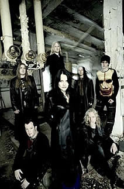

Entrevista
do Tristania à Paulo Cássio
Universo do Rock – Março de 2005
Como você
analisa as mudanças e as similaridades entre seu primeiro
álbum e esta nova fase da banda?
Sempre haverá um desenvolvimento
natural do nosso som. Até o momento lançamos quatro
álbuns e estou feliz por eles sempre terem a sonoridade
típica do Tristania. Apesar de todos eles serem bem diferentes.
Acho muito estúpido ouvir bandas falar mal de seus álbuns
antigos. Apesar disso eu raramente ouço meus próprios
álbuns. Gosto de todos, cada álbum representa
um passo na evolução da banda, apesar de sempre
usarmos os mesmos elementos básicos em nossos discos
(por exemplo, à diversidade de vocais), sempre foi importante
para nós desenvolver nosso som e aprimorá-lo.
Não estaria satisfeito em ter uma banda que gravasse
sempre o mesmo álbum. Com Ashes acho que demos
um passo adiante – ele é mais direto e soa mais
orgânico.
Quais são as principais
influências da banda. Como vocês as reciclam para
colocar sua própria sonoridade nelas?
Nós
temos muitas influencias, de Emperor a Tom Waits.
Todos temos a mente aberta quanto a música, ouvimos muitos
estilos diferentes My Dying Bride, Samael,
Nine Inch Nails, Radiohead, David Bowie,
Nick Cave e Seigmen são exemplos de
bandas que a maioria de nós ouve.
Como
é o processo de composição das músicas
e das letras, qual é a interferência de cada músico
na produção dos álbuns?
Tudo
começa comigo e Einar trabalhando em idéias simples.
Juntos fazemos o esqueleto da música – um arranjo
básico. Após este processo a banda inteira passa
a participar. Em especial Kenneth e os três vocalistas
para podermos tentar diferentes soluções para
as músicas. Muitas vezes testamos três vocais diferentes
na mesma parte da música antes de escolhermos com qual
trabalhar. Muitas pessoas achariam complicado trabalhar em um
processo como esse com sete pessoas, mas temos trabalhado muito
bem assim, como se formássemos uma corrente. Ashes é
o resultado deste trabalho em grupo, mais do que nunca toda
banda esteve envolvida.
Como você
analisa a cena gótica mundial de uma maneira geral (promoção,
diversidade, qualidade) e o que acha do futuro desta?
Pessoalmente acho a maioria das bandas
góticas desinteressantes. Acho que é o que acontece
com a maioria dos estilos: se você faz sempre a mesma
coisa ela se torna chata e unidimensional. Claro que existem
exceções mas acho mais interessante misturar estilos
e influências. Mesmo assim entendo que a imprensa e os
fãs precisem rotular as bandas. Eu nunca aceitei por
completo a descrição Gothic Metal sobre o Tristania
(exceto para o Widow’s Weeds, que eu acho um
disco de Gothic Metal). Claro que o Gothic Metal é um
dos lados de nossa música, mas, o Tristania é
muito mais do que isso.
Como vocês
reproduzem os violinos e os corais ao vivo?
Como já somos sete no palco não
temos muito espaço para colocarmos pessoas para tocarem
ao vivo (só para o coro precisaríamos de pelo
menos 20 eu acho). Infelizmente não temos como levar
todos em tour, então para algumas partes essenciais usamos
um hard disc para reproduzi-las. Algumas coisas tentamos fazer
ao vivo, não copiarmos o que fizemos em estúdio.
Nas novas músicas fazemos muito estas tentativas –
por exemplo, nos vocais Østen e Vibeke cantam as harmonias
um do outro, por exemplo, em Cure e The Wretched.
Mesmo antes
de lançar este novo álbum vocês o tocavam
ao vivo. Como foi a reação da platéia?
As
reações foram ótimas. Na tour Européia
com o Therion
e o Trail of Tears em outubro e novembro nós
tocamos Libre e Equilibrium. Foi muito legal
tocar uma música que as pessoas estavam ouvindo pela
primeira vez na vida. Estou orgulhoso, pois parece que o público
gostou muito, mesmo sendo totalmente novo para eles.
Quais músicas
do novo álbum você considera obra de arte. E qual
música do Tristania não pode faltar no set list
dos shows?
Jamais
chamaria meu próprio trabalho de obra de arte –
é uma expressão muito forte para mim.
Em Ashes minhas favoritas são
The Wretched e Endogenisis. Entre todas músicas
do Tristania em acho que Angellore e Beyond
são as únicas que tocamos em todos os shows após
o lançamento delas. E acho que a partir de agora isso
vai acontecer com The Wretched – acho que soa
fantástica ao vivo em especial pelo talento dos nossos
três vocalistas.
Como
foi o processo de produção? Quanto tempo demorou
para gravar e de onde vem as idéias para as letras?
O
processo criativo eu descrevi anteriormente. Quando uma música
toma forma começamos a trabalhar na pré-produção.
Quando entramos em estúdio fazemos muitas mudanças
e às vezes reestruturamos toda a música. Somos
muito críticos com nosso trabalho, e muita vezes é
difícil ficarmos satisfeitos, pois sempre achamos que
podemos fazer melhor. Como experimentamos muitos e gostamos
de ter tempo para isso, incluindo a mixagem para o Ashes, gastamos
mais ou menos de 10 a 11 semanas em estúdio. A inspiração
para as letras podem vir de qualquer lugar, um livro, um filme,
arte, natureza, pessoas que conhecemos, experiências da
vida. Nossas letras às vezes são pura ficção,
às vezes são experiências de nossas vidas
e às vezes uma mistura disso.
Quais são
as bandas que você geralmente ouve em tour? Você
gostaria de mencionar alguma em especial?
Em
tour, geralmente após um show, quando estou viajando
prefiro escutar algo mais calmo. Depois de uma noite com muito
metal eu gosto de encontrar meus companheiros de banda e escutar
algo relaxante, mas com o teor alcoólico aumentando o
metal volta à cena. Algumas bandas que ouço são
Massive Attack, Pink Floyd, Anathema,
David Bowie. São bandas boas para ouvir em tour.
De manhã minha escolha preferida é Tom Waits.
Para terminar
uma mensagem para os fãs brasileiros e para nossos leitores.
Muito obrigado pelo apoio de vocês.
O Brasil sempre foi especial para o Tristania. Nossa última
vez (Janeiro de 2002) foi maravilhosa, os fãs são
extremamente devotados. Estamos ansiosos para voltar e espero
que vocês estejam gostando do Ashes. Vejo vocês
nos shows.
Extraída
de www.universodorock.com